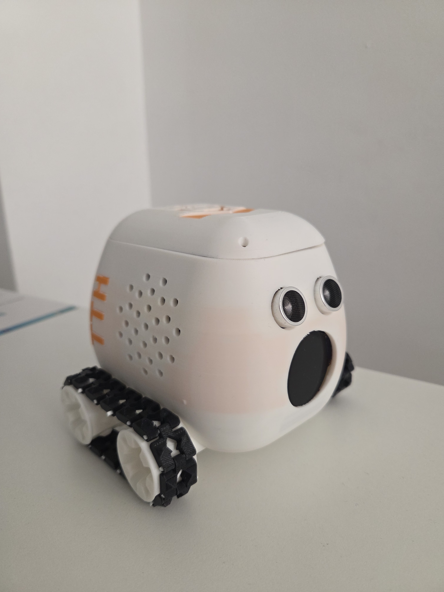

Products built across software and the real world.
I focus on projects that combine product thinking with technical depth — from full-stack platforms to robotics and embedded control.

01 · FEATURED CASE STUDY
AutoDiagnose AI
Full-stack automotive diagnostic platform with adaptive questioning and confidence-based reasoning.
Next.jsFastAPIPostgreSQLAI
View case study→

02 · PHYSICAL + SOFTWARE
ELIO
Educational robotics platform combining a custom robot, embedded control, BLE, software and AI-assisted learning.
ESP32C/C++BLECAD
View case study→